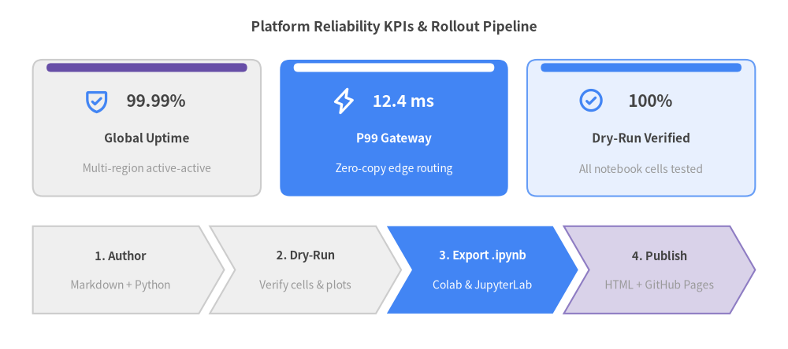
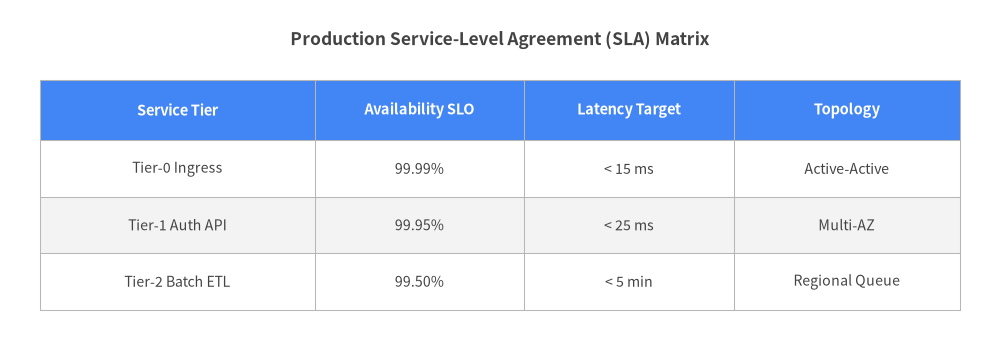

![Open In Colab]()
04. SmartArts: Executive KPIs, Pipelines & Tables
drawlib.smartarts provides 18 structured components (KpiCards, ChevronProcess, Table, TreeNode, MindMapNode, Roadmap, Cycle, GridLayout, Pyramid, GeoMap, *Calendar, etc.) that automate alignment, spacing, and typography.

View Drawlib Python Code
from drawlib.canvas import save, setup
from drawlib.icons import phosphor
from drawlib.smartarts import ChevronProcess, KpiCards
from drawlib.styles import Styles
from drawlib.text import text
setup(width=144, height=64)
text(
(72.0, 59.0),
"Platform Reliability KPIs & Rollout Pipeline",
style=Styles.DarkBold.patch(text_size=12.5),
)
kpi = KpiCards(
style=Styles.Neutral.patch(shape_r=1.8),
metric_style=Styles.DarkBold.patch(text_size=15.0),
text_style=Styles.DarkBold.patch(text_size=11.0),
description_style=Styles.Muted.patch(text_size=10.0),
accent_style=Styles.SecondaryFlat,
icon_style=Styles.PrimaryBold,
accent_position="top_bar",
metric_layout="top_stack",
spacing=3.5,
)
kpi.add("99.99%", "Global Uptime", "Multi-region active-active", icon=phosphor.shield_check)
kpi.add(
"12.4 ms",
"P99 Gateway",
"Zero-copy edge routing",
icon=phosphor.lightning,
style=Styles.PrimaryFlat.patch(shape_r=1.8),
metric_style=Styles.WhiteBold.patch(text_size=15.0),
text_style=Styles.WhiteBold.patch(text_size=11.0),
description_style=Styles.White.patch(text_size=10.0),
accent_style=Styles.WhiteFlat,
icon_style=Styles.WhiteBold,
)
kpi.add(
"100%",
"Dry-Run Verified",
"All notebook cells tested",
icon=phosphor.check_circle,
style=Styles.PrimaryNeutral.patch(shape_r=1.8),
accent_style=Styles.PrimaryFlat,
)
kpi.draw(xy=(6.0, 28.0), width=132.0, height=25.0, columns=3)
pipeline = ChevronProcess(
style=Styles.Neutral,
text_style=Styles.DarkBold.patch(text_size=10.5),
description_style=Styles.Muted.patch(text_size=10.0),
corner_angle=60.0,
spacing=2.0,
flat_left_end=True,
)
pipeline.add("1. Author", description="Markdown + Python")
pipeline.add("2. Dry-Run", description="Verify cells & plots")
pipeline.add(
"3. Export .ipynb",
description="Colab & JupyterLab",
style=Styles.PrimaryFlat,
text_style=Styles.WhiteBold.patch(text_size=10.5),
description_style=Styles.White.patch(text_size=10.0),
)
pipeline.add("4. Publish", description="HTML + GitHub Pages", style=Styles.SecondaryNeutral)
pipeline.draw(xy=(6.0, 6.5), width=132.0, height=16.0)
save()
In [1]:
!pip install -q drawlib
1. Preparing Structured Table Rows in Python
Reading-order SmartArts (Table, TreeNode, BulletPoints, SourceCode) use a Top-Left (x0, y_top) coordinate anchor and grow downward (-Y):
In [2]:
sla_matrix = [
["Service Tier", "Availability SLO", "Latency Target", "Topology"],
["Tier-0 Ingress", "99.99%", "< 15 ms", "Active-Active"],
["Tier-1 Auth API", "99.95%", "< 25 ms", "Multi-AZ"],
["Tier-2 Batch ETL", "99.50%", "< 5 min", "Regional Queue"],
]
print(f"Prepared {len(sla_matrix) - 1} SLA matrix rows.")
Out [2]:
Prepared 3 SLA matrix rows.
2. Rendering a Table SmartArt Inline
Let's render our sla_matrix variable using Table:
In [3]:
from drawlib.canvas import show, setup
from drawlib.smartarts import Table
from drawlib.styles import Colors, Styles
from drawlib.text import text
setup(width=124, height=44, cwd=True)
text((62.0, 39.0), "Production Service-Level Agreement (SLA) Matrix", style=Styles.DarkBold.patch(text_size=12.5))
tbl = Table(
cell_style=Styles.White,
text_style=Styles.Dark.patch(text_size=10.2),
header_cell_style=Styles.PrimaryFlat,
header_text_style=Styles.WhiteBold.patch(text_size=10.5),
border_style=Styles.MutedThin,
)
tbl.set_style_cell_evenodd(
even_color=Colors.Gray1,
even_text_style=Styles.Dark.patch(text_size=10.2),
odd_color=Colors.White,
odd_text_style=Styles.Dark.patch(text_size=10.2),
)
tbl.set_style_cell_header(
background_color=Colors.Primary,
text_style=Styles.WhiteBold.patch(text_size=10.5),
)
tbl.draw_flexible(
xy=(5.0, 34.0),
column_widths=[34.0, 26.0, 26.0, 28.0],
row_heights=[7.5, 7.0, 7.0, 7.0],
data=sla_matrix,
align="top_left",
)
show()
Out [3]:
